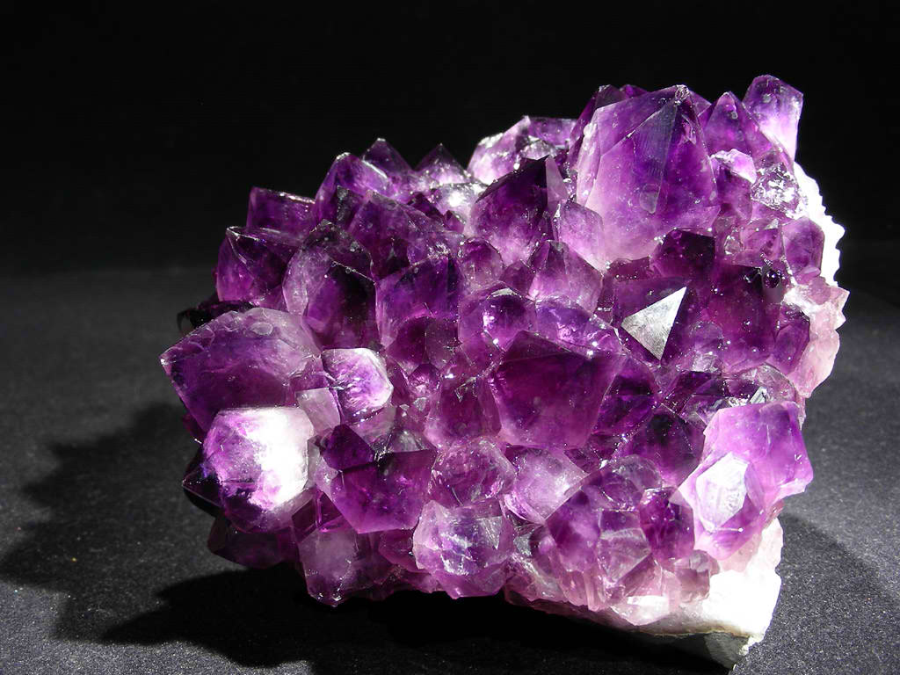
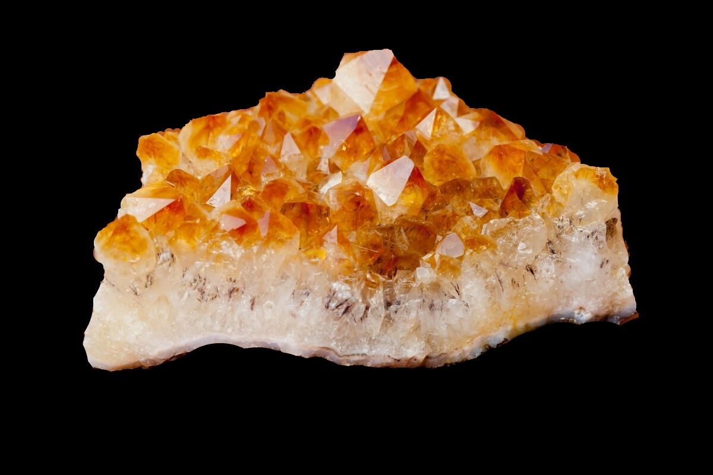

L'amethyste est une pierre pas très rare c'est l'une des pierres les plus connues du monde.

Fun Facts:
Si l'amethyste est exposer trop
a la chaleur la pierre perd ses couleur est se transforme en ORANGE, C'est comme ca qu'est formé la CITRINE:

Information:
Il est trouvable partout dans le monde.
La pierre est utilisé pour mediter. L'amethyste est une variente du quartz, il en existe plusieurs sorte de quartz dans le monde.
A l'antiquité l'amethyste été lié a des mythes, légendes.
Découvert:
La pierre est retrouvé presque partout dans le monde.
Mais les plus belles viennent du Brésil et d'Uruguay. L'amethyste est entouré de roche se qui s'appelle un géode